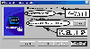
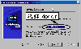
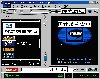
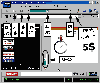
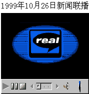

|
|
| 当前位置：电脑报电子版 > 1999 年 > 43 期 > 软件世界 > 学用RealPlayer播放器 |
| 《 学用RealPlayer播放器 》 |
一、网络多媒体节目播放工具 RealPlayer，这个工具原先是播放小巧玲珑的RM音乐文件的，到现在，已经发展成为最重要的网上音乐和影像的播放工具。RM音乐文件，在同等音质下，可以比MP3音乐更小巧（大约只有三分之二到三分之一大小），如果你愿意牺牲音质，甚至可以将3MB的MP3音乐压缩到几百K（当然也可以用RM格式录制高品质的音乐）。使用RM文件格式，就可以将你亲自唱的生日祝福歌通过E－Mail送给你远方的朋友。RM音乐文件，原来都是用RealPlayer播放器播放，现在有很多媒体播放器都支持，像微软的媒体播放器。现在，RM音乐文件，由于压缩率高，可以通过因特网以数据流的形式用RealPlayer实时播放，因此RM音乐在因特网上越来越流行，许多MP3网站，也提供相应的RM格式音乐供实时播放和下载。 而RealPlayer在不断地优化发展，目前已作为网络广播的工具，播放网络广播网站的实时音乐节目，也可以播放网络电视节目和电影，因此，RealPlayer已经发展成为一个多元化的因特网节目播放工具。 二、下载和安装 RealPlayer是共享软件，可以到RealNetWorks公司的网站（http:∥wwwrealcom)下载该软件的试用版。下载过程较为麻烦，需要填写一大堆个人信息。大家可以到国内的站点http:∥wwwnewhuacom/RealPlayerhtm下载该软件。 目前，RealPlayer的最新版本为RealPlayer Plus G2 60699，下载文件大小为8MB（有简化版本），RealPlayer完全版实际上是一个多媒体工具箱，除了RealPlays播放器，还有一个多媒体文件管理器RealJukebox（使用方法可以参见《电脑报》1999年25期《软件世界》的文章《个人音乐管理器——RealJukebox》），另外还有众多插件，如打开图片、播放MP3音乐、Flash动画的插件等。 RealPlayer的安装稍稍复杂一点。运行从网上下载的安装文件，文件开始解压缩，进行的过程较长，耐心等待后，弹出窗口，选择“Accept”。 接下来，在如图1所示的窗口中输入你的电子邮件地址，如果没有，可以随便输一个（但格式要正确）。点击“Brown”可以选择安装目录。最后选择“Finish”，即开始复制文件。 文件复制完成后，弹出窗口，输入必要的个人信息，如在“Country”栏中选择国家名称“Peoples's Republic of China”（中国），点击“Next”，到下一个窗口。 在该窗口中选择你的上网Modem的传输速率（图2），一般使用288K速率以上的Modem就可以得到较好的实时播音效果。点击“Next”。 在这个窗口选择RealPlayer可以播放的媒体类型，点击“Advanced”可以选择类型。最后，点击“Next”，再在弹出的窗口中点击“Finish”，完成安装。 安装完成后，RealPlayer将自启动（以后也将随系统启动而自动启动，随时监视网络连接情况自动播放多媒体数据流），并在桌面上建立名为“RealPlayer G2”的快捷启动方式。“RealJukebox”是启动多媒体管理工具的快捷方式。另外，“AOL Instant Messenger(TM)”快捷方式是美国在线的及时报信工具（有点类似ICQ），可以不去管它。 三、播放RM音乐 可以通过桌面快捷方式或从“开始”菜单启动RealPlayer。RealPlayer的界面如图3，菜单下面是播放工具栏，窗口的左面是连接网上广播的列表（频道窗口），窗口右面就是图像播放窗，窗口下面是连接网络广播的地址栏以及状态栏。使用RealPlayer播放RM音乐和MP3音乐很简单。启动程序后，选择菜单“File/Open File”，在弹出的文件打开窗口中选择要播放的媒体文件。可以看到，RealPlayer可以播放的媒体文件非常多，除了常规的MP3、RM、WAV等声音文件之外，还有Real格式影像文件、MOV（苹果公司的动画文件格式）文件、AVI动画文件、Flash动画文件等，甚至还有MP3列表文件、JPG和GIF图像文件等。选择好文件之后，程序即开始自动播放。RM格式的音乐可以到网上众多的MP3网站里去找，也可以使用RealProducer等工具自己制作。 另外，RealPlayer安装好后，将关联上所有支持的文件，因此，直接在Windows的资源管理器中双击被RealPlayer关联的程序图标（带有“Real”字样的蓝色图标），就可以自动启动程序播放。 播放的工具按钮参见图4，RealPlayer的播放操作没有WinAmp那么丰富和方便，但还是可以满足大多数情况下的需要。最新版的RealPlayer改进了很多，可以调节音频均衡、播放时进行录音以及音质分析等。 另外，如果要播放列表音乐，就必须用记事本自己制作列表音乐文件，然后再用RealPlayer播放。也可以用WinAmp来制作列表文件。 四、播放网上音乐 RealPlayer最吸引人的功能，就是可以通过网络来收听广播和音乐。现在网络广播的网站越来越多，国内也开播了好几家广播网站，如南京音乐台（http:∥wwwnmuradioilonlinecom）、佛山电台（http:∥wwwradiofoshancomcn）等，你可以上网搜索一下，可以找到很多的中文网络广播电台。RealPlayer本身就带有很多的广播电台和电视台的频道，并且分门别类地列出，如果要欣赏某类节目，可以很方便地连接到网络电台。收听网络广播很简单，在RealPlay的地址栏中填入网络广播的地址（图5），如南京音乐台的网址，然后点击播放按钮（或者选择菜单“File/Play”），RealPlay就开始连接该网址，连接成功后，就开始实时播放音乐了。如果网络的速度比较慢，可能需要一定的缓冲时间，等数据传输量足够了后，再开始播放。另外，可以点击地址栏旁边的“Search”按钮，打开浏览器查找广播网站。 如果要播放RealPlayer列出的广播频道，可以通过点击界面中的频道栏中某个著名频道，程序即开始自动连接播出。也可以通过“Presets”菜单，选择分类频道，如新闻、体育、聊天等等。点击界面地址栏中的“Search”按钮，可以打开浏览器查找网络上的广播频道。 如果你自己找到某个心爱的广播频道，也可以将它添加到“Presets”菜单中。方法很简单，选择菜单“Presets/Add to Presets”，然后在弹出的对话框中填入频道名称和收藏的类别即可。另外，你也可以整理程序的频道，选择菜单“Presets/Organize”，然后在弹出的窗口中操作即可（图6）。如要增加一个频道类别，可以点击按钮“New Folder”。也可以导出导入频道（选择按钮“Export Folder”或“Import”）。 五、播放电影和实时影像 通过RealPlayer实时播放电影和电视，由于接收带宽的限制，效果还非常糟糕。因此建议使用下载软件将影像文件先下载到硬盘上，在用RealPlayer播放。播放方法和播放音乐文件完全相似。播放的时候，可以通过菜单“View”改变播放屏幕的大小。如果要实时播放，例如收看中央电视台的《新闻联播》节目，可以先进入中央电视台的网站http:∥wwwcctvcom，然后进入新闻直播网页，选择好要播放的新闻日期，如十月一号，然后点击“Play”按钮，在网页上即可看到该天的新闻了（图7，网页上的播放窗口）。这时候，RealPlayer是作为IE的插件程序，在后台工作。 RealPlayer的“Presets”中列出了许多电视和电影频道，你也可以欣赏这些频道的节目。 六、设置 RealPlayer的设置比较复杂，设置的项目比较多，不过大多数都可以按照默认设置，设置窗口可以通过菜单“Options/Preferences”打开，其中“Proxy”栏中可以设置代理服务器，一般选择“Use my web browser’s HTTP proxy”（使用浏览器中设置的代理服务器）。(重庆 楠竹) |
| 下载本期推荐软件 | 页 首 |
| 《电脑报》版权所有，电脑报网站编辑部设计制作发布 |